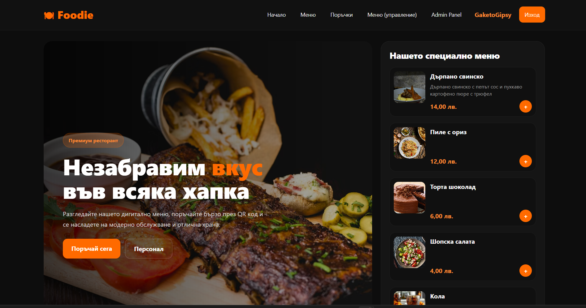

Foodie е уеб проект, създаден като модерна платформа за храна, рецепти и визуално представяне на ястия. Проектът е с фокус върху изчистен дизайн и добра потребителска навигация.
Основната идея е да се представя организирана информация за храни и категории в модерен и лесен за използване интерфейс.
Проектът показва умения във frontend разработка, UI дизайн и структуриране на уеб приложения.

HTML, CSS, JavaScript
Фокус върху UI дизайн, навигация и потребителско изживяване.